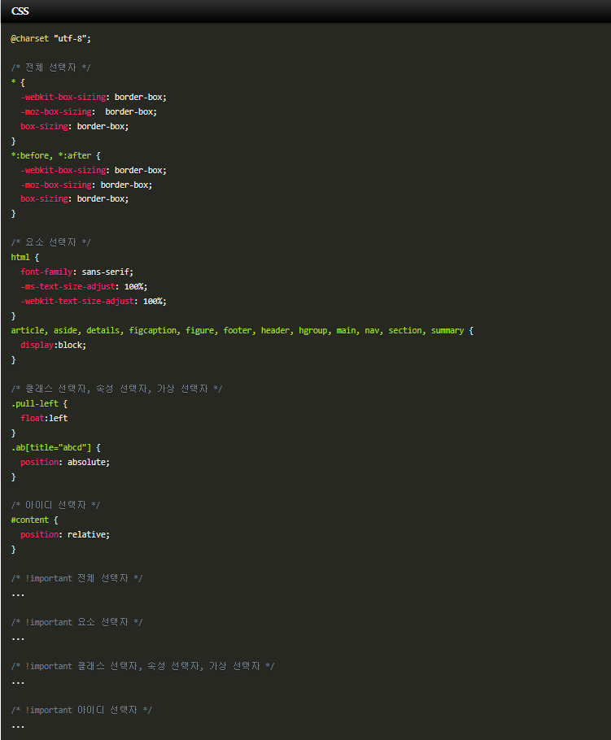

홈으로
CSS란 무엇인가?
1. CSS의 정의
CSS는 Cascading Style Sheet의 약자이다. CSS는 문서의 콘텐츠와 레이아웃, 글꼴 및 시각적 요소들로 표현되는 문서의 외관(디자인)을 분리하기 위한
목적으로 만들어졌다.
- Cascading : 계단식
- Style : 멋을 내다
- Sheets : (종이) 한 장
= 계단식으로 스타일을 정의하는 문서
2. CSS의 속성
- 여러 속성 값은 반드시 공백으로 구분되어야 한다.
- 축약 표현 속성은 여러 속성 값을 하나의 간소화된 선언으로 적용할 수 있다.
- 속성이 명시되지 않으면 해당 속성의 기본 값이 적용된다.
3. CSS의 기본문법
CSS 규칙은 선택자(selector)와 선언부(declaration)로 나뉜다. 선언부는 다시 속성(property)과 속성값(value)로 나누게 된다.

- 선택자는 보통 스타일링하고 싶은 HTML 요소나 부여한 ID 혹은 class가 위치한다.
- 선언부에 여러개의 속성과 속성값이 있을때는 ;(세미콜론)으로 구분한다.
- 각각의 선언은 속성과 속성값을 :(콜론)으로 구분한다.
선택자{
속성명: 속성값;
}
- 선택자 : p 태그에 스타일을 적용하겠다.
- {중괄호} : 이 안에 p 태그에 대한 스타일을 정의하겠다.
- color를 정의하겠다. 글자색
- 속성값 : 속성값 : red로 정의하겠다(=빨간색)
p{
color: red;
}
- 선택자 : 어떤 요소에 스타일을 적용 할지에 대한 정보
- {중괄호} : 선택한 요소에 적용할 스타일을 정의하는 영역
- 속성명 : 어떤 스타일을 정의하고 싶은지에 대한 정보(색상,크기 등)
- 속성값 : 어떻게 정의하고 싶은지에 대한 정보
4. HTML에 CSS를 더하려면?
HTML문서에 CSS문서(코드)를 적용하고자 할 때는 다음과 같은 방식들을 사용할 수 있다.
- 인라인 스타일 : 태그에 직접 기술
- 스타일 태그 : 스타일시트를 위한 태그를 추가하여 기술
- 문서 간의 연결 : 스타일시트 문서를 따로 작성하여 HTML 문서와 연결하기
5. CSS 우선순위
CSS는 기본적으로 선언된 순서에 따라 적용되지만 각종 선택자와 삽입 위치에 따라 우선순위가 달라질 수 있다.
1) 선택자 우선순위
important > 인라인 스타일 > 아이디 선택자 > 클래스/속성/가상 선택자 > 태그 선택자 > 전체 선택자
경쟁 규칙이 같은 선택자 그룹에 속해 있다면 선택자의 종류와 수에 따라 우선순위가 결정된다. 즉 높은 우선순위의 선택자를 더 많이 사용한 규칙이 이긴다.
2) 삽입 우선순위
- <head>요소안의 style 요소
- <style>요소안의 @import문
- <link>요소로 연결된 CSS 파일
- <link>요소로 연결한 CSS 파일 안의 @import 문
- 최종 사용자가 연결한 CSS 파일
- 브라우저의 기본 스타일시트
예외적으로, 최종 사용자가 연결한 CSS 파일 안의 !important 규칙은 우선순위 1위다. 최종 사용자는 !important 규칙을 작성해서 웹사이트 디자이너가 만든 CSS 파일의 규칙을 무효화할 수 있다.
여러 CSS파일이 같은 우선순위 위치에서 연결되고 삽입되어 있을 때는 연결/삽입 순서에 따라 우선 순위가 결정된다. 가장 마지막에 연결/삽입된 스타일시트가 앞의 스타일시트보다 우선순위가 높다.
3) 우선순위 전략
우선순위를 최대한 단순하게 유지해야 한다는 것을 고려한다.
- 연결하는 CSS 파일의 수를 최소화
- @import 문 사용을 자제
- 선택자를 각 CSS 파일 안에서의 의도한 순서대로 정렬

6.출처
CSS기초(정의, 링크, 문법, 우선순위)
CSS 공부 기록 핵심 정리#1
위로가기